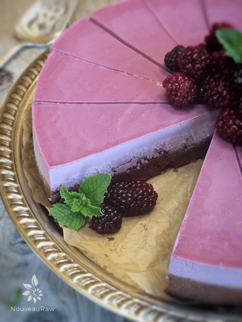

Brownie Bottom Blackberry Cheesecake
 ~ raw, vegan, gluten-free ~
~ raw, vegan, gluten-free ~
Cheesecakes don’t get much better than this. Brownies + cheesecake… all in one bite?! Trust me, you are going to want to try this recipe.
Not only do the flavors come together in harmony, the textures… ooooh those textures! The moist, chewy brownie, combined with the creamy, silky-smooth cheesecake. My taste buds are singing and dancing to (this) tune. Lord have mercy on my young soul, boy am I dating myself here.
As you scroll down through the ingredients and preparation list… it might seem intimidating but take my word for it, it’s not. I just did my best to line every step out to make it very clear and concise for you.
If blackberries are not in season by the time you visit this recipe, you can use organic frozen blackberries in place of fresh. Or, you could replace them with any other fresh or frozen berry.
Do note that the color of the cheesecake can and will vary depending on the berries you use. There are times when the cheesecake is vibrant and purple like this one and other times it is more pink or even blue-gray. You are at the mercy of the berry! :)
When it comes to pans, you can use just about any size. First off, I highly recommend using Springform pans. They are the bomb when it comes to the ease of removal. For this cheesecake, I used a 9″ pan. If you don’t have that size, but perhaps a 6 or 8″, you can use those too… just divide the batter up between two pans. I find it to be a lot of fun to make one 6″ pan and then a few single-serving sizes. Have fun with it!
Yields 7-9″ springform pan
Brownie:
Blackberry slurry: yields 1 cup
- 2 cups blackberries
- 1/4 cup water
Cheesecake layer:
- 3 cups raw cashews, soaked 2+ hours
- 1 cup water
- 1/4 cup lemon juice
- 3/4 cup maple syrup
- 1 Tbsp vanilla extract
- 1/4 tsp Himalayan pink salt
- 3/4 cup cold-pressed coconut oil, melted
- 3 Tbsp sunflower lecithin powder or liquid
Preparation:
Brownie:
- Place the walnuts and salt in a food processor fitted with the S-blade and process until finely ground.
- Be careful that you don’t over-process the walnuts or they will get too oily.
- Add the cacao powder and pulse until the cacao is well mixed.
- Sprinkle the dates around the bowl of the food processor, add 1/3 cup of ganache, water, and vanilla. Process until the mixture begins to stick together.
- Again, I can’t stress enough to not over-process the batter. Walnuts are high in oil and when overworked they can release too much of their natural oils.
- If the dates that you have are really dry, rehydrate them in warm water until soft. Drain and use the soak water in your next smoothie. Having the dates soft will help with the blending process.
- Line a 7-9″ cake pan with parchment paper or plastic wrap.
- I like to use a springform pan for my cake but it isn’t required.
- Transfer the chocolate cake batter into the pan and distribute it evenly.
- Press down with your hand to compact.
- If the cake batter is sticking to your hands, lightly dampen them.
Blackberry slurry:
- In the blender, combine the blackberries and water. Blend until creamy smooth.
- Pour the slurry into a mesh bag (nut bag works great) and hand-squeeze all the liquid from the bag. Discard the berry seeds. This should equal 1 cup of liquid, if a little shy of that add water to reach 1 cup.
- By leaving the seeds in the berries, it will make the batter grainy.
Cheesecake layer:
- Drain the soaked cashews and discard the soak water. Place in a high-speed blender.
- Add blackberry slurry, lemon juice, sweetener, vanilla, and salt. Blend until the filling is creamy smooth. You shouldn’t detect any grit. If you do, keep blending.
- With a vortex going in the blender, drizzle in the coconut oil, and then add the lecithin. Blend just long enough to incorporate everything together. Don’t over-process. The batter will start to thicken.
- What is a vortex? Look into the container from the top and slowly increase the speed from low to high, the batter will form a small vortex (or hole) in the center. High-powered machines have containers that are designed to create a controlled vortex, systematically folding ingredients back to the blades for smoother blends and faster processing… instead of just spinning ingredients around, hoping they find their way to the blades.
- If your machine isn’t powerful enough or built to do this, you may need to stop the unit often to scrape the sides down.
- Pour the filling over the brownie layer in the pan. Gently tap the pan on the counter to remove any air bubbles.
- Chill in the freezer for 4-6 hours and then in the fridge for 12 hours.
- Top with whole blackberries and drizzle the extra chocolate sauce over the slices when ready to serve.
- The cheesecake will keep fresh for about 3-5 days in the fridge or up to 3 months in the freezer. Regardless of where you store it, make sure that it is well protected from air and fridge/freezer odors.

© AmieSue.com